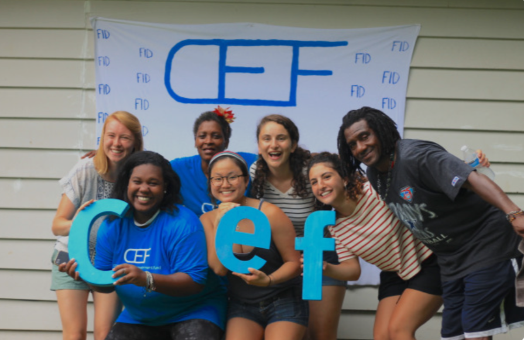

LOCATIONS
The Community
Empowerment
Fund
The address for CEF is 208 N Columbia St Suite 100, Chapel Hill, NC, 27514. The fridge is accessible anytime from 10:00am-3:00pm on Monday-Friday and unfortunately is closed on the weekends. On most Thursdays, it is also accessible from 5:00pm-7:00pm.

https://connect.community.duke.edu/agency/detail/?agency_id=119540
TBA
We are currently trying to find local parterns to get a 24/7 fridge setup outisde. This, similar to Durham Community Fridges, will likely be formed with a local church or mutual aid organization.
https://contexture.org/communitycares-frequently-asked-questions/